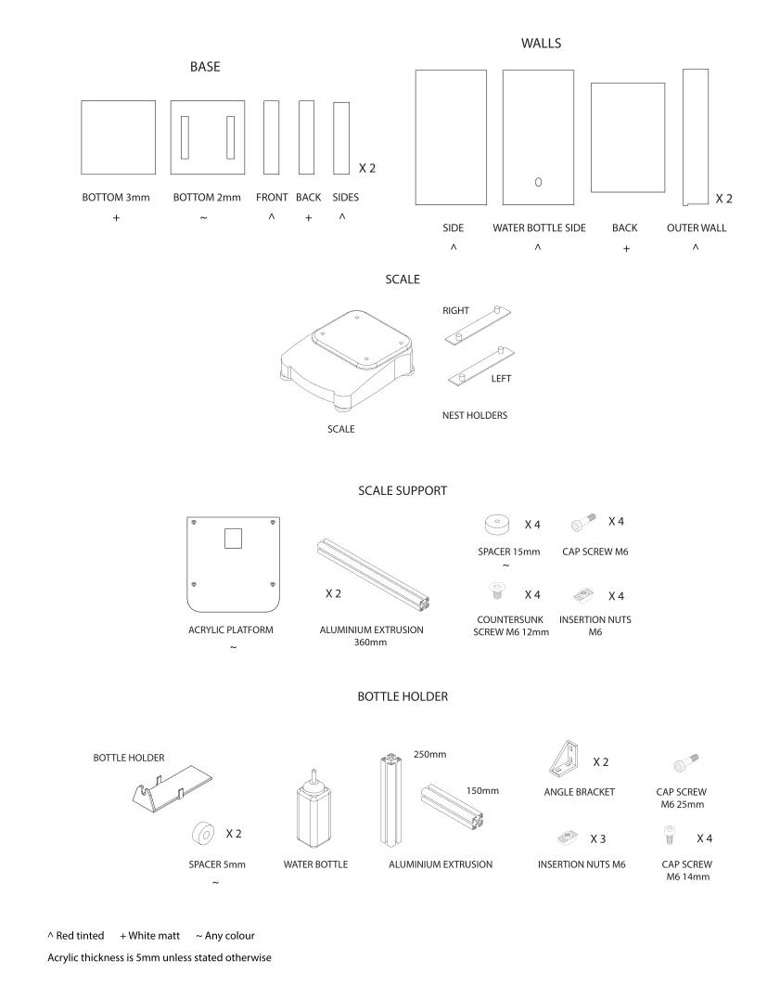

Nest#

Insert description of the Nest.
Parts list#
Assembly guide#
Scale support#
Steps 1-3
1. Create the scale support by bolting the acrylic platform (5mm) to the two aluminium extrusions (360mm).#
2. Remove the metal weighing pan from the scale and insert the 3D printed nest holders. This allows for direct attachment of the nest to the scale ensuring its stability.#
3. Using 4 acrylic spacers, bolt the scale to the side of the arena.#
Nest bottom#
Steps 4-7

4. Using chloroform, bond the 2 white acrylic bottom pieces, one of which will slot into the 3D printed nest holders.#
5. Attach the red acrylic sides to the nest bottom.#
6. Attach front (red) and back (white) to the nest bottom.#
7. The base of the nest will sit directly on the scale by slotting into the nest holders. This area will be filled with nesting material and enrichment, like chew sticks, during the experiments.#
Nest walls#
Steps 8-10
8. Attach the back acrylic wall (white) to the wall sides (red). One of the sides has an opening for the water bottle spout.#
9. Attach the nest outer walls (red). These will connect to the arena outer walls.#
10. Position the nest base and walls onto the arena, above the scale. The base of the nest will sit directly on the scale held by the 3D printed holders, while the walls will connect to the arena outer walls.#
Water bottle holder#
Steps 11-13
11. Assemble a T shape aluminium extrusions support for the water bottle.#
12. Connect the 3D printed water bottle holder to the support.#
13. Bolt the water bottle holder on the side of the nest using angle brackets. Adjust its inclination to fit the spout into the side wall opening.#